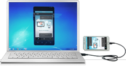

설치가 어려우세요? 어떻게 활용해야 할지 모르겠다고요?
고객문의 본 제품은 개인용 입니다. 제휴 및 구매 문의는 기업용 문의로, 개인용 문의는Q & A 를 이용해 주세요.
고객문의 본 제품은 개인용 입니다. 제휴 및 구매 문의는 기업용 문의로, 개인용 문의는Q & A 를 이용해 주세요.
설치하는 방법이 까다롭고 어려우세요? 동영상 또는 설치 단계별 이미지를 확인하시고 도움을 받아보세요.
 설치 및 실행 방법 보기1. 모바일에서 구글 플레이에 접속해 모비즌앱 다운 및 설치
2. 모바일에서 모비즌앱 실행 (첫 실행일 경우 연결설정 진행)
3. PC에서 모비즌 프로그램 설치(프로그램 다운로드)
4. PC에서 모비즌 프로그램 실행(이메일, 연결암호 입력)
5. USB, WiFi 연결 방식 중 최적의 방식으로 모바일과 PC 자동 연결
1. PC에 해당 모바일 USB 드라비버 설치 (설치 파일은 각 제조사 홈페이지 참조)
2. 모바일의 ‘설정 > 응용프로그램 > 개발 > USB 디버깅’ 체크
3. PC와 모바일을 USB 케이블로 연결
4. PC의 모비즌 프로그램 실행
1. 한/영 키 누름 (한글 입력상태로 바꿈)
2. 한글을 입력하면 바로 모비즌 키보드 설정 창이 팝업
3. 팝업창에서 ‘키보드 설정에서 Mobizen 체크’ 버튼 클릭
4. 모바일 키보드 및 입력방식 세팅 화면에서 ‘Mobizen’ 체크
5. 모바일 백 버튼 클릭
6. 팝업창에서 ‘입력 방법에서 Mobizen 체크’ 버튼 클릭
7. 모바일 입력방식 선택창에서 ‘Mobizen’ 선택
8. 한글 입력
* 한글을 입력하시면 뷰어 상단에 한글이 입력되고, 엔터키를 누르면 모바일에 한글이 표시됩니다.
* 모비즌 연결이 종료되면 이전에 설정한 입력 방식으로 자동 변경됩니다.
1. 모바일의 모비즌앱 실행
2. ‘설정 > 설정 초기화’ 메뉴 터치
3. 설정 초기화 화면에서 ‘초기화’ 버튼 터치 (초기화 완료 후 연결정보 설정 화면으로 이동됨)
4. 연결정보 설정 화면에서 등록되어있는 다른 이메일계정 선택
5. 연결암호 등록
6.완료
1. 모바일에서 모비즌앱 실행
2. 우측상단 세부 메뉴에서 “연결 암호 변경 » 메뉴 터치

3. 연결암호 4자리 입력
4. 연결암호 4자리 재입력
5. 완료
1. 모바일에서 모비즌앱 실행
2. ‘설정 > PC연결방법’ 터치
3. 원하는 연결방식만 선택
4. ‘저장’ 버튼 터치
1. 모비즌을 통하여 모바일과 PC연결
2. 우측상단 세부 메뉴에서 ‘PC등록’ 메뉴 터치
3. 설정 > 등록PC 에서 '등록된 PC만 사용' 옵션 선택
1. 설정 > 도구 > 캡처 옵션 또는 녹화옵션 선택
2. '스킨포함' 옵션 선택
3. 캡처 또는 녹화 실행
1. ‘설정 > 일반설정 > 알림사용’ 옵션을 ‘사용’으로 체크
2. 알림사용 설정 창에서 ‘설정하기’ 선택
3. ‘접근성’과 ‘Mobizen’ 옵션 체크
1. ‘설정 > 일반설정 > 뷰어 잠금’ 옵션 선택
2. 자동 잠금 시간 선택 (1분, 2분, 3분, 5분, 10분)